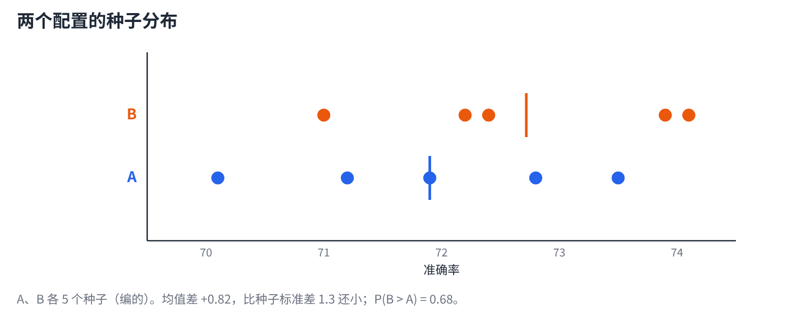
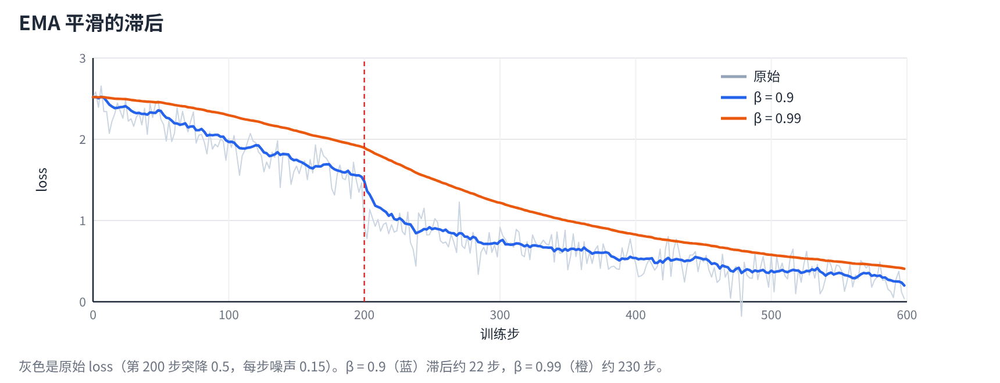
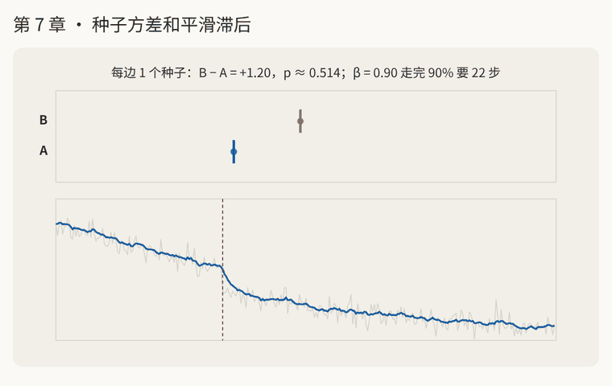

第 7 章 · 批判地读 loss 曲线和消融表：一张图先问五个问题
本地运行
git clone https://github.com/wikieden/math-and-eval-stats
cd math-and-eval-stats/code/notebooks
pip install jupyterlab torch numpy
jupyter lab ch07_read_curves_and_ablations.ipynb也可以下载后直接用 VS Code 打开 .ipynb 运行。需要 GPU 的章节在 Colab 里选「代码执行程序 → 更改运行时类型 → GPU」。
本章回答：消融表里"+0.8 个点"算不算提升？平滑过的 loss 曲线能信多少？训练 loss 一直在降，模型就一直在变好吗？拿到别人的实验结果，该按什么清单追问？
讲解日期：2026-11-25 · 上一章：第 6 章 A/B 判定规则与多重比较 · 下一章：第 8 章 概率补课
对应原文：Bouthillier 等 2021《Accounting for Variance in Machine Learning Benchmarks》materials/text/papers/variance-in-ml-benchmarks-2103.03098.txt摘要 L14–L24、建议 L95–L118、式 (9) P(A > B) L553–L574；Agarwal 2021materials/text/papers/rl-statistical-precipice-2108.13264.txtL55–L70（少量运行的问题）；TRI LBMmaterials/text/papers/tri-lbm-careful-examination-2507.05331.txtL250–L256（可区分性标注）
本章缩写：EMA = Exponential Moving Average（指数 / 滑动 / 平均：TensorBoard 曲线平滑用的就是它）；β（本章）= EMA 的平滑系数；P(B > A) = 随便挑一次 B 的运行赢随便一次 A 的运行的概率；Welch t 检验 = 以统计学家 Bernard Welch 命名、不假设两组方差相同的 t 检验；Mann-Whitney 检验 = 只看排序的两组比较检验。全部缩写见 附录 · 缩写与术语表
讲解
第一步：先问"换个种子会差多少"（2026-11-25）
类比：同一个运动员跑 5 次百米，成绩本来就有起伏。 比较两个运动员，先得知道一个人自己的起伏有多大。
Bouthillier 2021（摘要 L17–L20）分析了整条训练流程：数据划分、参数初始化、数据增强、超参搜索，每一项随机性都会明显改变最终结果。种子方差就是"什么都不改，只换随机种子"带来的波动。
例子（编的：两个配置各 5 个种子的准确率）：
| 配置 | 5 个种子 | 均值 | 种子间标准差 | 最好的一个 |
|---|---|---|---|---|
| A | 71.2, 72.8, 70.1, 73.5, 71.9 | 71.90 | 1.33 | 73.5 |
| B | 72.4, 71.0, 73.9, 72.2, 74.1 | 72.72 | 1.29 | 74.1 |
- B − A = +0.82，比一个种子的标准差（1.3）还小；
- 如果两边都只报最好的种子，差值变成 +0.6；如果各自只跑了一个种子，差值可能是 −2.5 到 +4.0 之间的任何数。
一句话：先看种子间标准差；差值比它小，单次运行的比较几乎没有意义。
第二步：差值是不是噪声：检验和 P(B > A)（2026-11-25）
类比：A 赢了一局不说明 A 更强，要看"A 赢的局数占多少"。
| 方法 | 结果 |
|---|---|
| Welch t 检验（不假设方差相同） | p = 0.351 |
| Mann-Whitney 检验（只看排序） | p = 0.421 |
| P(B > A) = 25 个 (B 种子, A 种子) 配对里 B 赢的比例 | 0.68 |
P(B > A)（Bouthillier 式 (9)，L566–L571）比"均值差"更有意义：它问的是"下一次随便跑一次 B，比随便跑一次 A 好的概率"。论文建议的判定规则（L553–L560）：只有 P(B > A) 显著高于 0.5、并且高到一个事先约定的门槛 γ，才说 B 更好；γ 的取值由领域约定，论文给出了讨论。
要多少种子（用第 3 章的样本量公式，标准差 1.31、想分清 1 个点、α = 0.05、功效 80%）：每边约 27 个种子。大多数论文每边 3–5 个，所以"+1 个点"的消融结论大多下不了。Agarwal 2021（L55–L65）在 RL 基准上指出了同样的问题：只跑几次运行时，点估计本身就不可靠。

图 7-1 · A、B 各 5 个种子的点和均值线；两组大面积重叠，P(B > A) = 0.68一句话：用检验和 P(B > A) 判断差值；按种子标准差估算要几个种子，大多数"+1 个点"需要几十个种子才分得清。
第三步：平滑过的曲线会拖后腿（2026-11-25）
类比：开车看后视镜里的路。 平滑曲线显示的是过去一段时间的平均，变化总是晚到。
TensorBoard 的平滑是 EMA：\(s_t = \beta s_{t-1} + (1 - \beta)x_t\)。一次突然的下降（比如第 200 步学习率衰减，loss 降 0.5），平滑后的曲线要过 k 步才走完 90%：
| β | 走完 90% 的下降要几步 |
|---|---|
| 0（不平滑） | 1 |
| 0.9 | 22 |
| 0.99 | 230 |
平滑也有好处：每步噪声标准差 0.15，β = 0.9 平滑后只剩约 0.03。代价是时间上的滞后：看到"第 400 步才开始降"，实际可能第 200 步就降了；比较两条曲线谁先收敛时，平滑系数必须相同，而且要看原始曲线。

图 7-2 · 灰色是原始 loss（第 200 步突降 0.5），蓝 / 橙是 β = 0.9 / 0.99 的平滑曲线；β = 0.99 要 230 步才走完 90%一句话：EMA 平滑把突变拉成 ln 0.1 / ln β 步的缓坡；β = 0.99 滞后 230 步；比较曲线要看原始数据。
第四步：过拟合、评测漂移和一张追问清单（2026-11-25）
类比：背熟了模拟题的学生，正式考试不一定考得好。
过拟合：训练 loss 一直降不代表模型一直变好。编的例子：
| 检查点 | 0 | 1 | 2 | 3 | 4 | 5 | 6 |
|---|---|---|---|---|---|---|---|
| 训练 loss | 2.1 | 1.4 | 1.0 | 0.7 | 0.5 | 0.35 | 0.25 |
| 验证 loss | 2.2 | 1.6 | 1.3 | 1.2 | 1.25 | 1.35 | 1.5 |
验证 loss 在第 3 个检查点最低，之后训练还在降、验证在升，最后差距 1.25。只画训练曲线会以为"越训越好"。
评测漂移：同一个检查点在不同时间、不同评测人、不同光照下的成功率不同。TRI LBM 对每个策略都画后验分布，并标出"统计上可区分"的组（L252–L254）；Kress-Gazit 建议同一时段交替盲测（第 4 章）。
拿到一张曲线或消融表，先问这五个问题：
| 问题 | 为什么 |
|---|---|
| 1. 每个数是几个种子 / 几次运行？标准差多少？ | 第一、二步：差值要和种子方差比 |
| 2. 报的是均值、最好的一个，还是挑过的？ | 只报最好的种子会系统性夸大 |
| 3. 比较了多少个变体？做没做多重比较校正？ | 第 6 章：比得越多越容易撞上"显著" |
| 4. 曲线平滑过吗？系数多少？验证集和训练集都画了吗？ | 第三、四步：滞后和过拟合 |
| 5. 评测条件固定吗？换天、换人、换场地会怎样？ | 评测漂移；配对、盲测（第 4 章） |
场景代码：用 scipy 做本章的两个检验（就是本章代码用的写法）：
from scipy.stats import ttest_ind, mannwhitneyu
p_welch = ttest_ind(seeds_B, seeds_A, equal_var=False).pvalue # 不假设两组方差相同
p_mw = mannwhitneyu(seeds_B, seeds_A, alternative="two-sided").pvalue # 只看排序，不怕离群值
一句话：看验证曲线找过拟合，固定评测条件防漂移；拿到结果先按五个问题追问。
动画演示：种子方差和平滑滞后

可交互版：animations/07-read-curves-and-ablations.html（滑块调种子数和 EMA 系数 β）。
怎么看：
- 上半：A、B 两组种子的点，种子数从 1 增加到 30；只有 1 个种子时，B − A 的符号随机，种子多了才稳定（第一、二步）；
- 右上角是当前的 Welch p 值和 P(B > A)；
- 下半：一条第 200 步突降的 loss 曲线和它的 EMA 平滑；拖 β，看平滑曲线的拐点往右挪多远（第三步）。
练习与作答记录
题 1（第二步 P(B > A)）：A 的 3 个种子是 60、62、64，B 的 3 个种子是 61、63、65。算 P(B > A)。均值差是多少？你会说 B 更好吗？
作答：（待作答）
题 2（第三步 EMA）：TensorBoard 平滑设成 0.95。一次突变要多少步才在平滑曲线上走完 90%？
作答：（待作答）
题 3（第四步 清单）：一篇论文的消融表：完整方法 85.3，去掉模块 X 84.1，去掉模块 Y 84.9，每个数一个种子，表里还有另外 6 个消融。用五个问题各写一句追问。
作答：（待作答）
口诀
先问换种子差多少，差值小于标准差就别下结论；
均值差不如赢的概率，几十个种子才分得清一个点；
平滑像看后视镜，β 越大拖得越久；
训练降了看验证，五个问题逐个问。
本章复习卡片
ST43（种子方差与 P(B > A) 的意思）、ST44（EMA 平滑的滞后公式）、ST45（读结果的五个问题）。练习做完后，按答错、卡住的地方补上。
附录 · 延伸阅读
留给以后深入学习用，不影响本章主线。★ 是建议先读的。
推荐阅读
| 读什么 | 读哪里 | 读它为了什么 |
|---|---|---|
| ★ Bouthillier 等 2021 | 摘要 L14–L24；建议 L95–L118；§4–5 L530–L600 | 方差来源的分解；为什么要随机化尽可能多的来源；P(A > B) 判定规则 |
| ★ Agarwal 等 2021 | §1–3 L55–L170 | 少量运行下点估计不可靠的实例；表现分布图和 IQM |
| TRI LBM | L250–L256 | 大规模评测里怎么标"统计上可区分" |
| 《VLA 从零到 π0》第 19 章 评测 | 全章 | 把这一章的追问用在 VLA 论文的成功率表上 |
数学原理
- P(B > A) 的估计：\(\hat P = \frac{1}{n_An_B}\sum_i\sum_j\mathbb 1[b_i > a_j]\)（平局算 1/2），正是 Mann-Whitney U 统计量除以 \(n_An_B\)。
- EMA 对阶跃的响应：输入从 0 跳到 1，\(s_k = 1 - \beta^k\)（\(s_0 = 0\)）；指数衰减的"时间常数"约 \(1/(1-\beta)\) 步。
- Welch t 检验：\(t = (\bar b - \bar a)/\sqrt{s_A^2/n_A + s_B^2/n_B}\)，自由度用 Welch–Satterthwaite 近似；两组方差不同时比经典 t 检验可靠。
公式清单
| 公式 | 意思 |
|---|---|
| \(P(B > A) = \frac1{n_An_B}\sum_{i,j}\mathbb 1[b_i > a_j]\) | Bouthillier 式 (9) |
| \(s_t = \beta s_{t-1} + (1 - \beta)x_t\) | EMA 平滑 |
| \(k = \lceil\ln(1 - f)/\ln\beta\rceil\) | 走完比例 f 的步数 |
| \(n \approx 2(z_{\alpha/2} + z_\beta)^2\sigma^2/\delta^2\) | 每边要的种子数 |
代码对照：把本章的数字用代码算一遍
代码在仓库本地
math-and-eval-stats/solutions/chapter-code/ch07_read_curves.py，配套测试tests/test_ch07.py：
bash cd math-and-eval-stats/solutions/chapter-code uv run python ch07_read_curves.py uv run pytest tests/test_ch07.py
讲义 ↔ 代码：
| 讲义 | 公式 | 写法 | 跑出来 |
|---|---|---|---|
| 第一步 种子方差 | 均值、标准差 | seed_summary(SEEDS_A) |
71.90、1.33 |
| 第二步 检验 | Welch / Mann-Whitney | welch(...)、mann_whitney_p(...) |
0.351 / 0.421 |
| 第二步 P(B > A) | 式 (9) | prob_outperform(SEEDS_A, SEEDS_B) |
0.68 |
| 第二步 种子数 | 样本量公式 | seeds_needed(1.31, 1.0) |
27 |
| 第三步 EMA 滞后 | ln 0.1 / ln β | lag_after_drop(0.9)、lag_formula(0.99) |
22、230 |
关键几行：
wins = (b[:, None] > a[None, :]).sum() + 0.5 * (b[:, None] == a[None, :]).sum() # 所有配对里 B 赢几次
s[t] = beta * s[t - 1] + (1 - beta) * x[t] # EMA 一步
k = ceil(log(1 - frac) / log(beta)) # 阶跃要几步走完 frac
代码里才看得到的 3 件事：
- 广播做配对比较：
b[:, None] > a[None, :]一次比出 5 × 5 = 25 对，不用双重循环。 - 滞后要在干净的阶跃上量：带噪声的曲线上，平滑值什么时候"越过 90%"会被噪声左右；代码用同一条曲线的无噪声版本、再扣掉不突降的版本，得到的步数和公式完全一致。
- TensorBoard 的平滑有去偏：实际实现会除以 \(1 - \beta^t\) 修正开头那段被 \(s_0\) 拉低的值，开头的形状和本章的简单版不同；稳定以后两者一样。
自己改一改（不影响练习答案）：
- 把
SEEDS_B全部加 2，看 Welch p 值和 P(B > A) 各变成多少。 - 把
loss_curve的噪声从 0.15 改成 0.5，β = 0.9 的平滑曲线还看得清那次突降吗？